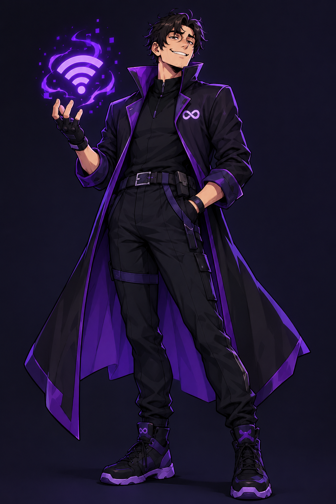
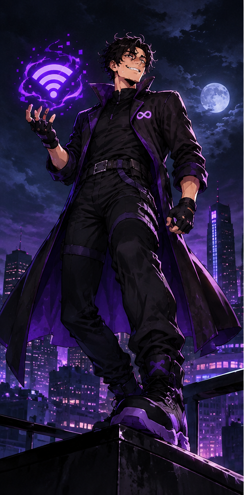
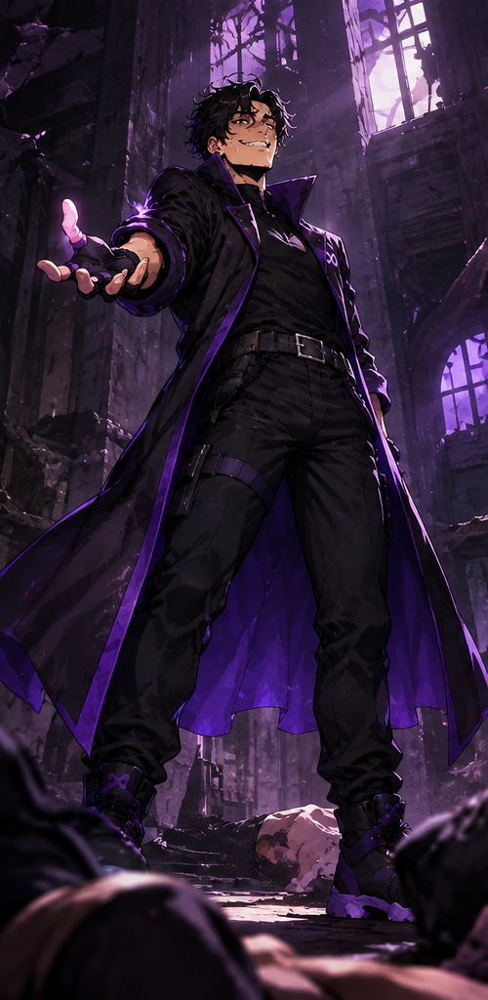
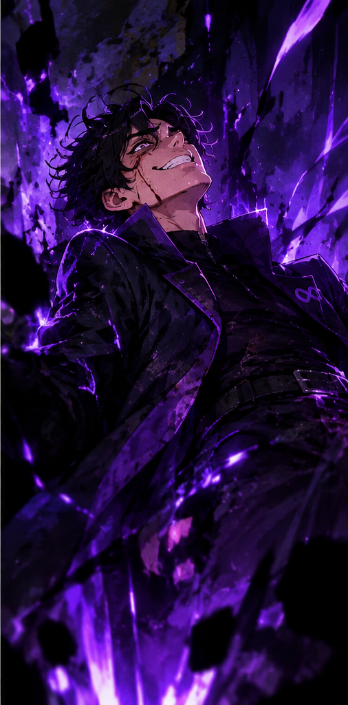

Reverso, cujo nome verdadeiro é Roberto Martins, é um vilão sarcástico, confiante e imprevisível capaz de inverter a função de qualquer coisa que toque. Ele pode fazer portas fecharem ao invés de abrir, carros andarem para trás ou armas falharem. Apesar de poderoso, Reverso não controla completamente sua habilidade, fazendo com que seus próprios poderes frequentemente causem situações inesperadas. Vestido de preto com detalhes roxos, ele enfrenta seus inimigos sempre com um sorriso e a certeza de que “tudo aconteceu exatamente como ele planejou”.


Topo de um arranha-céu no coração da metrópole

Ruínas de um antigo salão abandonado

Área devastada